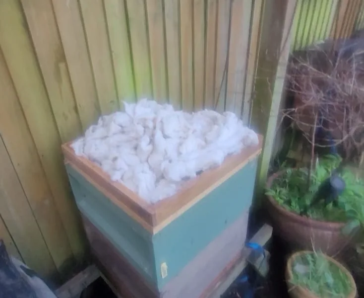

Last updated: 27 October 2026
Should You Insulate a Beehive for Winter?
Every autumn, as the days get shorter and the temperature begins to drop, the question of whether to insulate our beehives comes around again. It's something I've thought about over the years, and I have changed the way I do it.
I used to wrap the outside of my wooden hives as well as adding insulation above the crown board. These days, I don't bother with the external wrapping. But there's one part of my routine that hasn't changed: every winter I still pack a wool-like insulating material into an eke above the crown board.
I'm not claiming to have carried out a scientific comparison, or that my method is the only correct one. This is simply what I've used and how my approach has developed.
How I Used to Wrap My Hives
For years I used a wide piece of material similar to damp-proof course (DPC). I would wrap it around the outside of the brood boxes and pin it into place, as you can see in my photograph.
At the same time, I added insulation above the crown board. So I had two separate arrangements: the black outer covering and the insulation beneath the roof.
I no longer use the outer wrapping. It was another job each autumn, and I eventually decided to keep things simpler. That doesn't mean wrapping a hive is necessarily wrong, only that it is no longer part of my routine.
Was the DPC actually insulating the hive?
Looking back, it's worth distinguishing between a weather or wind barrier and a material that provides substantial thermal insulation. A thin DPC-type sheet may help reduce direct wind exposure, but that doesn't automatically make it a good insulator. An impermeable covering also needs care so that water is not held against the timber.
What I Still Use Every Winter: Wool-Like Insulation in an Eke
This is the part of my winter preparation that has stayed the same. I bought a wool-like insulating material from a beekeeping supplier, and I continue to use it year after year.
I pack it into a wooden eke above the crown board, then put the roof back on. The material shown in this photograph is the same type of insulation I still use today; it isn't something I've replaced with rigid foam board.
I can't give it a more specific product name without checking the original supplier details, so I would rather describe it accurately than guess.

It's a straightforward arrangement, and because it sits above the crown board it doesn't involve surrounding the brood boxes with additional material. I make sure the insulation is dry, the roof fits correctly and any feeding arrangement remains accessible when required.
If you're unfamiliar with the board beneath the insulation, my guide to crown boards and clearer boards explains how the various types work and why openings should be managed properly.
Why Insulation Above the Crown Board Makes Sense to Me
Honeybees have an impressive way of coping with the cold. As temperatures fall, they form a winter cluster, with the bees working together to conserve heat and maintain suitable conditions for survival. They are not trying to heat the whole hive to the temperature of our living room.
However, their activity and use of stores produce moisture. When warm, moist air comes into contact with a cold surface overhead, condensation can form. If water collects and drips onto the bees, that's a problem we want to avoid.
Insulating above the crown board can reduce heat loss through the top of a wooden hive and help keep that surface warmer. It may reduce condensation directly above the cluster, though it doesn't eliminate the need to think about moisture or fix a leaking roof.
Does Every Beehive Need to Be Wrapped?
I don't think there's one answer that suits every hive. A sheltered wooden National hive has different exposure from a hive in an open, windswept apiary. Poly hives also have insulating walls that are different from the relatively thin timber walls of a traditional wooden brood box.
Someone else's winter arrangement may therefore look quite different from mine. My experience tells me what I prefer to do; it doesn't prove that another beekeeper's approach is wrong.
Before making changes, I'd look at the condition of the boxes, roof and stand, local exposure and how the colony is doing. My October beekeeping guide and autumn beekeeping checklist cover the wider seasonal preparations.
What About Open-Mesh Floors and Ventilation?
One question that often follows the insulation discussion is whether an open-mesh floor should be closed over winter. Opinions vary, and hive layout and exposure make a difference.
I wouldn't assume that insulating the top automatically means every gap should be sealed. Nor would I treat ventilation holes as a universal cure for condensation. It's the whole setup that matters: weatherproof roof, crown board, insulation, entrance and floor arrangement.
Above all, avoid configurations that let rain enter or that block bees from reaching emergency feed. The December beekeeping guide looks at winter checks and moisture concerns in more detail.
What Matters More Than Insulation?
Whatever we put around or above a hive, we shouldn't lose sight of the things that are most likely to determine whether the colony comes through winter in good condition.
- Enough accessible stores: a colony can still starve in a well-insulated hive. See my winter feeding guide for stores, hefting and emergency food.
- Healthy winter bees: timely Varroa management is an essential part of preparing a colony.
- A sound, weatherproof roof: insulation won't compensate for rain entering the hive.
- Secure equipment: hives need to remain stable in autumn and winter winds.
- As little unnecessary disturbance as possible: once winter arrives, I prefer external checks unless there is a real reason to intervene.
For a broader overview, see winter beekeeping in the UK.
My Approach Today
Beekeeping is one of those activities where your methods develop over time. I used to wrap the sides of my hives with DPC-type material and add wool-like insulation above. Now I simply use the same wool-like insulation in an eke above the crown board, as I have done every winter.
I haven't stopped using top insulation, and I haven't switched to a different filling. I've just stopped wrapping the outside of the hive.
I wouldn't pretend that this proves top insulation alone is best in every situation. What I can say is that I've found a simpler routine that suits the way I prepare my hives.
For me, winter preparation isn't about making a hive look cosy. It's about giving a healthy, well-fed colony a sound, dry home and then allowing the bees to get on with what they do naturally.
Frequently Asked Questions
Insulation above the crown board can help reduce heat loss and cold-surface condensation in a wooden hive, but it is not a substitute for healthy bees, adequate stores and a sound roof.
I place my wool-like insulation in an eke above the crown board, beneath the roof. Make sure the insulation stays dry and does not block feeding access or prevent the roof fitting properly.
Not always. I used to wrap my wooden brood boxes with a wide DPC-type covering but now use only insulation above the crown board. The best approach depends on hive construction, exposure and local conditions.
A DPC-type covering can provide a wind and weather barrier, but a thin membrane should not be assumed to provide much thermal resistance. Avoid arrangements that trap water against wooden hive walls.
Insulation above the crown board often helps reduce condensation on cold overhead surfaces. Moisture problems still depend on leaks, ventilation, insulation placement and the overall hive arrangement.
There is no single rule for every hive. Consider your floor design, apiary exposure, moisture management and any manufacturer guidance rather than assuming every opening should be closed.
Join the Conversation
Beekeeping is all about learning from one another. Follow BeezKnees for more practical UK beekeeping guides, seasonal observations and equipment explainers.
Follow the BeezKnees Facebook Page